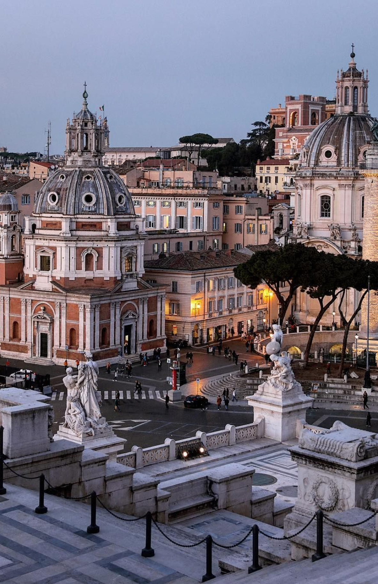

Информация о направлениях
В данном разделе вы сможете найти краткую информацию о популярных направлениях, которым посвящен данный сайт. Под описаниями можно найти ссылки на страницы с очень подробные статьи и путеводители по каждому городу, включая историю,многочисленные достопримечательности, лучшее время их посещения и много чего еще.
|  Рим, Piazza Venezia (площадь Венеции). Фото: pinterest.ru | РимРим - столица Италии и региона Лацио, один из красивейших и интереснейших городов мира, который часто называют "Вечным". Расположен на легендарных семи холмах на реке Тибр, примерно в 25 км от побережья Тирренского моря. Рим - колыбель великой цивилизации и центр одной из величайших империй в истории человечества. Это город, вобравший в себя тысячелетия истории, познавший удивительный расцвет и громкое падение. Рим - это удивительная концентрация древностей и великих античных сооружений, сакральных памятников и очаровательных улочек, с гладкими мощеными камнями, отполированный миллионами ног |
| Венеция, Naviglio Grande. Фото: flipboard.com | ВенецияВенеция - один из самых известных городов Италии и центр одноименной области Венето, расположенной в северо-восточной части страны на берегу Адриатического моря. Она входит в список объектов Всемирного наследия ЮНЕСКО, являясь одним из самых уникальных и романтичных мест планеты. Венеция - потрясающий и сказочный город, исторический центр которого построен на 118 островах Венецианской лагуны и представляет собой невероятное сочетание лабиринта улиц-каналов и сотен мостов с изящной архитектурой роскошных дворцов и грандиозных церквей. |
| Неаполь, Naples Villa donn' Anna Neapol. Фото: spravka-region.ru | НеапольНеаполь - крупнейший город на юге Италии и столица региона Кампания. Расположенный в живописной бухте на побережье Тирренского моря у подножия знаменитого Везувия, этот шумный и динамичный мегаполис является третьим по численности населения в стране после Рима и Милана. Неаполь - бурный, красочный, солнечный и немного хаотичный город, пропитанный ароматами пиццы и лимончелло, который является душой Италии. |
 Милан, Галерея Виктора Эммануила II. Фото: fishki.net
Милан, Галерея Виктора Эммануила II. Фото: fishki.net |
МиланМилан - главный город Северной Италии и столица области Ломбардия. Это современный мегаполис, который считается деловым и финансовым центром страны. Милан - столица моды и бизнеса, самый стильный, дорогой и богатый город Италии, который котируется наравне с Парижем и Лондоном у любителей развлечений и шопинга. Но не только этим славится столица Ломбардии. Здесь можно посмотреть на такие известные достопримечательности как: великолепный Дуомо, замок Сфорца, включённый в список объектов Всемирного наследия ЮНЕСКО, церковь Санта-Мария-делле-Грация, в которой находится легендарная фреска Леонардо да Винчи "Тайная вечеря" и множество других не менее интересных памятников истории и культуры. |